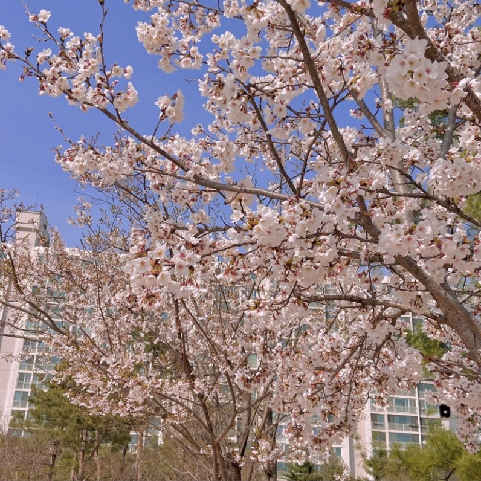
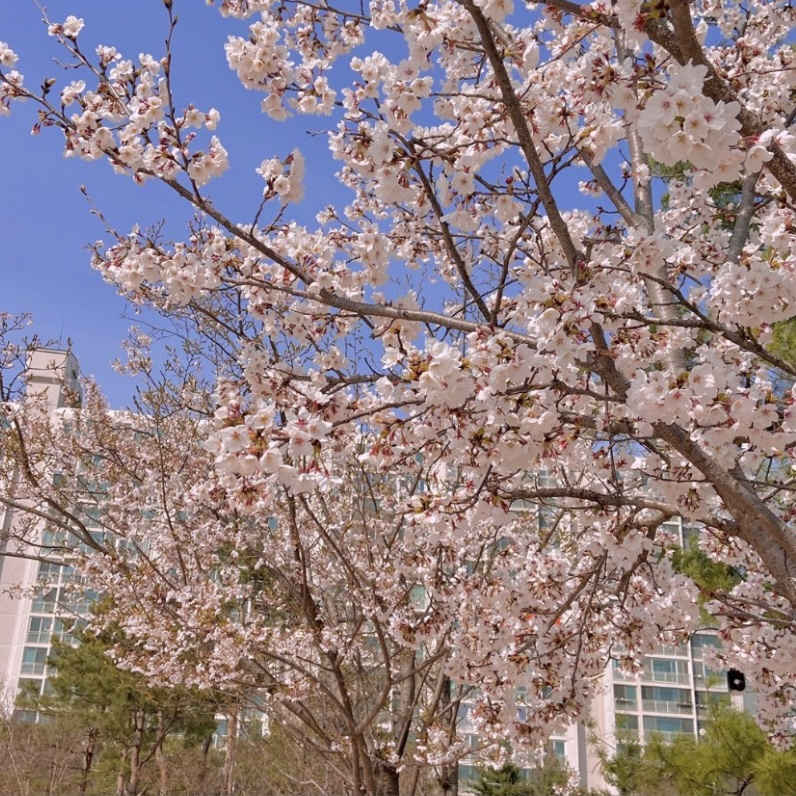

2021년 봄은 입시로 인해 벚꽃 구경을 가지는 못했다. 하지만 꽃을 보러 가지 못한다는 생각을 가지고 있다 보니
주변에 있는 풍경을 더욱 유심히 보게 되었다. 위에 사진은 모두 내 집 주변에서 찍은 벚꽃 사진인데 멀리 놀러 가지
않아도 충분히 예쁜 벚꽃을 본 거 같아서 행복했던 기억이 생생하다.
봄은 내가 정말 좋아하는 계절이다. 따스한 날씨도 너무 좋고 풍경과 꽃 향도 좋아서 행복해진다. 그리고
학교 친구들과 졸업사진도 찍고 재미있게 놀았던 기억이 가득해서 2021년 봄은 나에게 좋은 기억들이 가득하다.